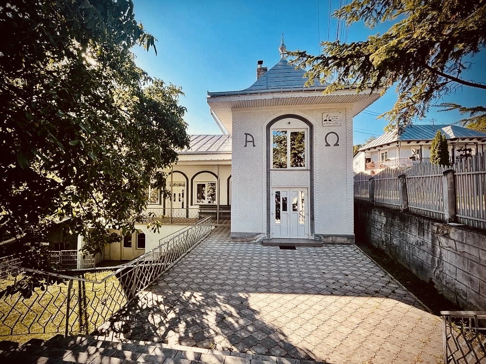
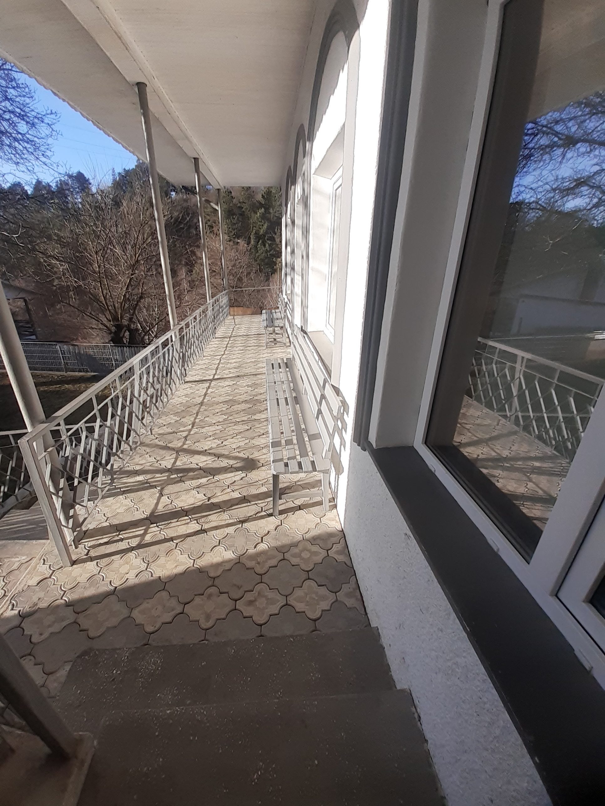
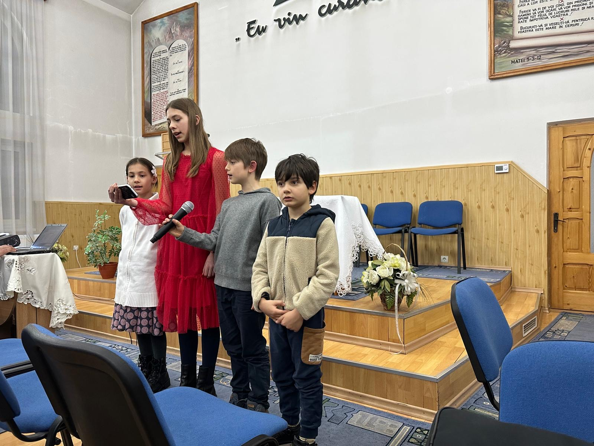

O comunitate pentru suflet, credință și familie.
Află mai multeParticipă la programele de rugăciune și închinare săptămânale.
Grupuri de tineret, evenimente și ieșiri în natură.
Suntem implicați în sprijinirea persoanelor aflate în nevoie.



Dacă dorești să susții misiunea și activitățile bisericii noastre, poți face o donație prin transfer bancar în contul de mai jos.
Site-ul nu procesează și nu stochează date de plată. Transferul se face direct prin banca ta.